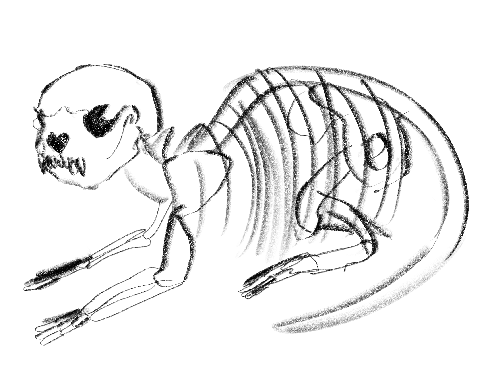
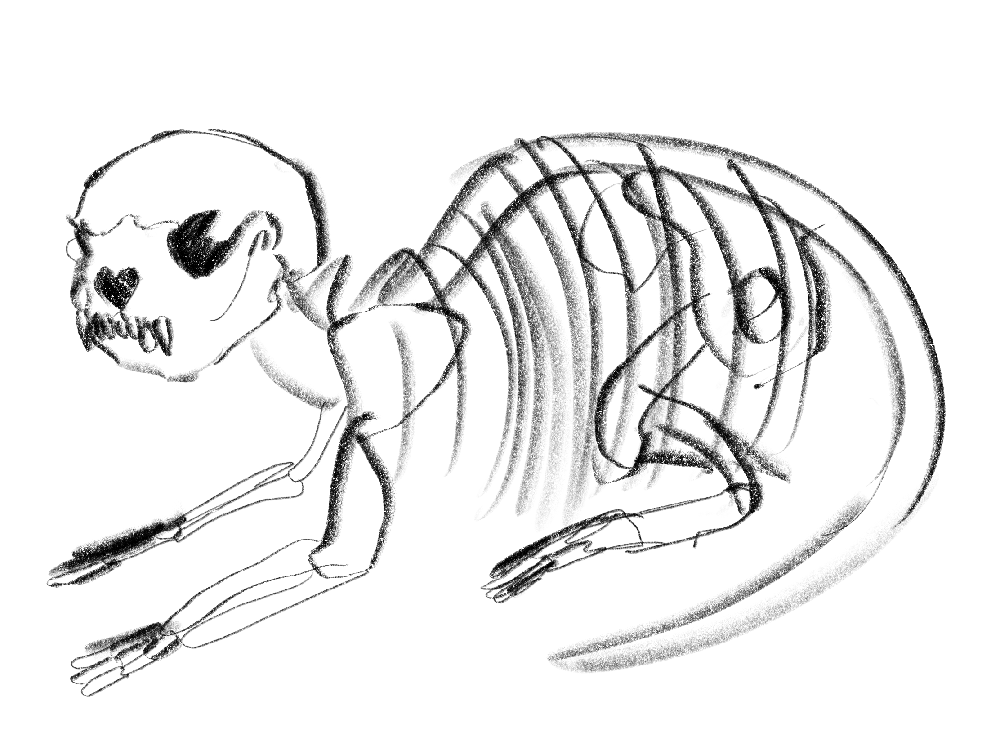

Welcome! Here you can click on the picture in order to reveal the anatomy of the otter!
Otters are one of the smallest marine mammals. Their whiskers help them to detect vibrations in murky waters. They can also close their ears and nostrils underwater!
They have webbed feet, which are also flipper shaped in order to help them to propel themselves through the water.
 
